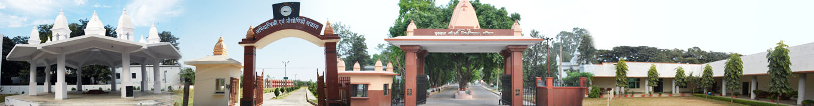

/
/
About GKV, Haridwar

Establishment :-
Gurukula Kangri Vishwavidyalaya was founded on March 4, 1902 by Swami Shraddhananda ji with the sole aim to revive the ancient Indian Gurukula System of education, on the bank of Ganges at a distance of about 6 km. from Hardwar and about 200 km. from Delhi. This institution was established with the objective of providing an indigenous alternative to Lord Macaulay’s education policy by imparting education in the areas of vedic literature, Indian philosophy, Indian culture, modern sciences and research.It is a deemed to be university fully funded by UGC/Govt. of India.
Arya Samaj has been advocating women’s education since the day it was founded. As part of its policies for the up-liftment of women in the country, Kanya Gurukula Campus, Dehradun was established in 1922 by Acharya Ramdevji as a second campus of women’s education. To give real shape to the dreams of Swami Shraddhanandaji, Kanya Gurukula Campus, Hardwar was established in 1993.
Gurukula has witnessed many distinguished guests in its journey till date. To name a few of them are Mr.C.F. Andrews, Former Prime Minister of Britain, Mr. Remjy Mcdonald, Mahatma Gandhi, Pt. Madan Mohan Malviya, Dr. Rajendra Prasad, Dr Radha Krishnan, Sh.Jamnalal Bajaj,Dr. Munje, Sadhu Vaswani,Pt. Jawahar Lal Nehru, Smt. Indira Gandhi & Sh.Gyani Jail Singh, Sh.L.K.Advani and recently in 2011 Smt.Meira Kumar, Speaker Lok Sabha visited the vishwavidyalaya.
Objectives :-
a) To promote value-based system of education, inculcating love for Ancient Indian Culture, Vedic philosophy, Yoga and other disciplines from time to time on concurrence of UGC.
b) To impart and promote the education of Ved-Vedangas, Sanskrit language and literature with all its branches of Ancient Vedic as well along with other subjects/disciplines such as Humanities, Social Sciences, Sciences, Engineering, Technology, Management Studies, Medicine and others as may be decided from time to time on the approval of UGC and/or regulatory authorities as the case may be.
c) To promote equality of educational opportunities, irrespective of caste, creed and
financial or social status according to the Ideals of Vedic Ancient Indian Culture.
d)To revive the Ashram life and the institution of Brahmacharya.
e) To prepare students for their integrated development with a strong character devoted to nationalism to be good citizens for the service of the country and humanity and to that end to establish, maintain, control and to have suitable educational campuses.
f) To provide high quality teaching and research and for the advancement of knowledge and its dissemination through various research programmes undertaken in-house by a substantial number of full time faculty / research scholars (Ph.Ds and Post Doctoral) in diverse disciplines as per guidelines of UGC from time to time.
g) To promote a synthesis between ancient Indian wisdom and modern knowledge of sciences.
Achievements :-
(a) Deemed University Status :-The distinguished services of this institution to the nation were recognized when it was given the status of Deemed to be University in 1962 by University Grants Commission.
(b) A Grade :- National Accreditation and Assessment Council (NAAC) has accredited university with A grade in 2015.
(c) Centenary Year :- Vishwavidyalaya celebrated year 2002 as its centenary year. The Vishwavidyalaya has had phenomenal growth over the past 100 years and now offers 20 UG courses and 17 PG courses in different disciplines.Research programmes leading to the degree of Ph.D. are being run in the fields of Vedic literature, Sanskrit literature, Philosophy, Hindi, English, Psychology, Ancient Indian History Culture & Archaeology, Environmental Science, Physics, Chemistry, Mathematics, Human Consciousness and Yogic Sciences, Botany, Zoology, Microbiology, Computer Sciences and Management Studies.
(d) Membership :- Gurukula Kangri Vishwavidyalaya is a Registered autonomous institute. All the degrees conferred by Vishwavidyalaya are recognized by UGC and AICTE wherever required. Gurukula Kangri Vishwavidyalaya is a pride member of Association of Indian Universities and Association of Commonwealth Universities.